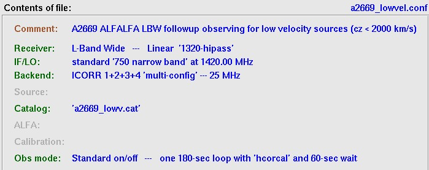
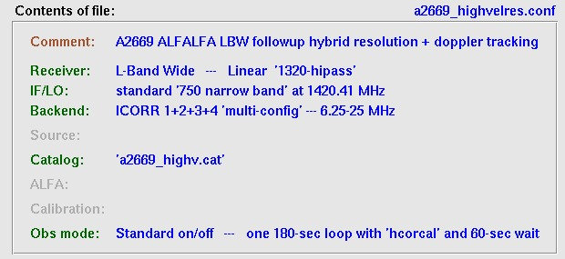
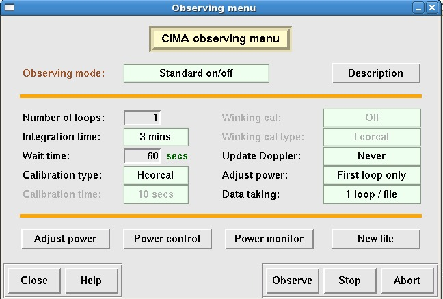
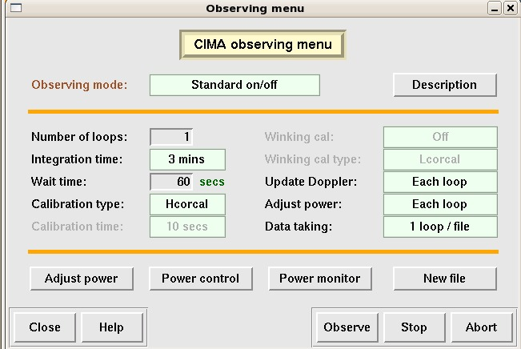
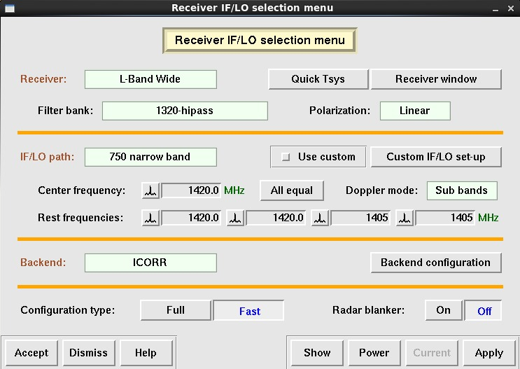
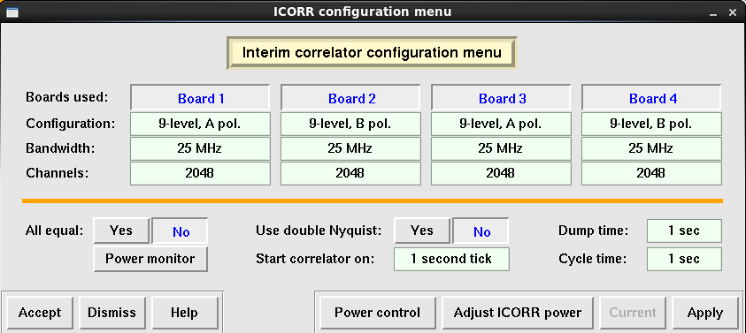
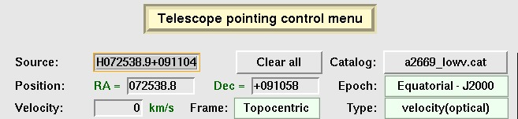
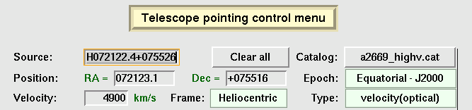

- Type cima --X in an available window. Select the desired version of CIMA; this is currently "The 'smart' version of CIMA (3.1.08 2010-02-01 17:44 "Smart")"
- Project Number: a2669 (note: even if you type "A", CIMA will change it to "a" when you click "Line")
- Observer: your name (for entry into operator's log book)
- select Line and Accept
Several other windows will also open: the CIMA log display window and the CIMA observation status window. Leave them open through the night.
Make sure that L-wide shows up in the aostatus monitor. Leave the default options as is:
- Make quick Tsys measurement: No
- Rotate receiver into position: Yes
- Retrack source if selected: Yes
Load the appropriate a2669 configuration file: (There will be more than one; check which one you are supposed to use for the current session).
- Low velocity mode: select a2669_lowvel.conf
- High velocity mode: select a2669_highvelres.conf (New: Mar 12)
|  |  |
Be patient while the configuration file is applied....
If you cannot find the configuration file (or if only the a2010 files are present), then you entered the wrong project number into the CIMA opening window. You will have to exit CIMA and enter a2669
This should be set up automatically by the configuration file, so that these items should always be set as follows:
| Low velocity mode  |
High velocity mode  |
This should be set up automatically by the configuration file but you need to know what correlator board configuration you are using, so it's a good idea to check.
There will be one setting per observing session, and two basic settings depending on the frequency range we are using. We normally concentrate on the first two correlator boads (1 and 2); the second set are used for monitoring purposes or to achieve higher resolution according to the observing mode. The first mode, used for the lowest velocity sources (cz < 2000 km/s), uses a fixed 25 MHz bandpass ("topocentric" with no velocity specified) centered at 1420 MHz; the source then will move around in the bandpass, depending on its actual cz. The second mode, dubbed "high velocity", moves the bandpass around according to the velocity of the source. Please be sure you know which one you are using.
| Low velocity mode  |
High velocity mode |
- If anything needs to be changed, make sure you have the correct configuration file.
- If this does not help, change the settings manually, then click Apply followed by Accept.
This should be set up automatically by the configuration file, so that these items should always be set as follows:
| Low velocity mode  |
High velocity mode |
This should be set up automatically by the configuration file, so that these items should always be set as follows:
| Low velocity mode  |
High velocity mode  |
|
|
When you have checked things, you can Dismiss this window.
- Click on Command file observing
- Click on Load
- Highlight the correct command file: a2669_YYMMDD.cmd and click Accept
- Click on Run and cross your fingers....